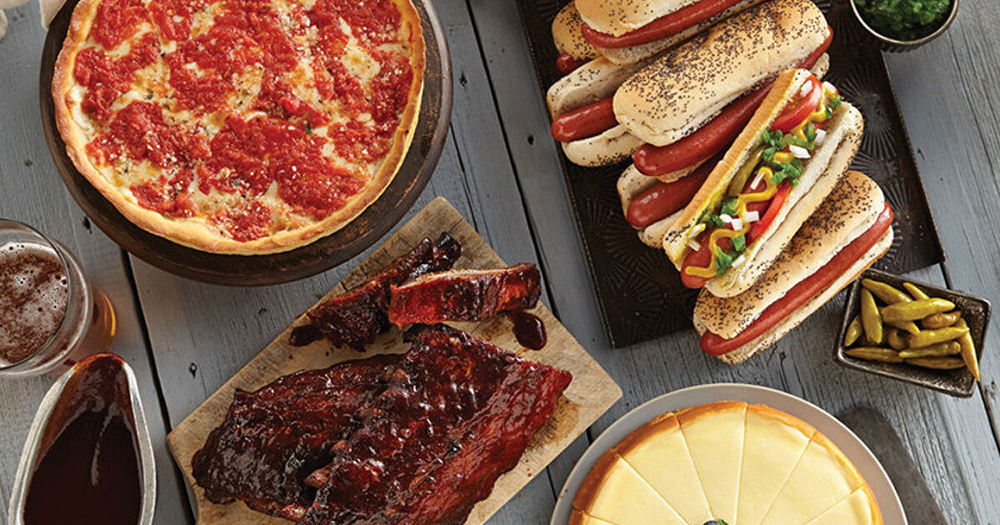
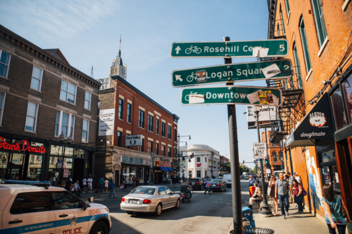

Top Attractions
Visit major landmarks like Millennium Park, Navy Pier, and Willis Tower.
View AttractionsA simple guide to attractions, food, events, and neighborhoods around the Windy City.
This city guide helps you learn more about Chicago and what it has to offer. Use the pages below to explore attractions, food spots, events, and different neighborhoods.
Visit major landmarks like Millennium Park, Navy Pier, and Willis Tower.
View Attractions
Find Chicago-style pizza, casual food, and fine dining ideas.
View Food
Learn about Downtown, Hyde Park, Wicker Park, and more.
View Areas